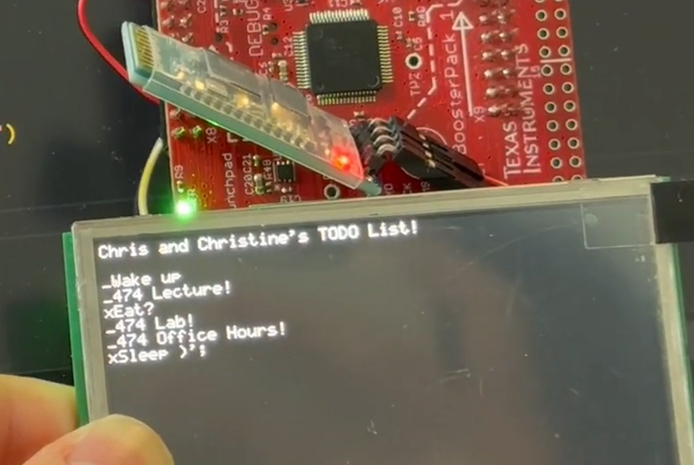

Desktop Reminder Buddy
A small physical device that pulls your calendar onto a display sitting next to your monitor — less intrusive than a phone notification, always visible.
Overview
I kept missing calendar events because I'd dismiss phone notifications and forget them. The goal was something ambient — always on, always visible, passive. A small display next to the monitor that showed the next one or two events without requiring any interaction.
The hardware is an ESP32 development board driving a small OLED over I²C. A Python script runs on the host machine, queries Google Calendar, and sends formatted event data over UART to the microcontroller. The firmware parses the incoming data and decides what to show.
How it works
Host-side Python script
The Python script queries Google Calendar, filters the results down to what's actually relevant for the next day (skipping all-day events, hiding events I've already attended), tags each remaining event as a to-do item, and ships them to the ESP32 over UART. Because the filtering happens host-side, the microcontroller never sees the noisy raw calendar data — it gets a small, already-prioritized list to render.
Custom interrupt-driven UART driver
The firmware's main job is receiving that serial stream reliably while still driving the display. I wrote a custom interrupt-driven UART driver on the ESP32 side rather than polling — incoming bytes go straight into a ring buffer from the ISR, and the main loop drains the buffer at its own pace. That decouples ingestion from rendering and means a long display update can't make us miss a serial frame.
The parser on top of that handles variable-length to-do strings, enforces a maximum display width per line (the OLED is 128 px wide at our font size, which works out to about 16 characters), and truncates gracefully with an ellipsis at word boundaries rather than cutting mid-word.
Display rendering via I²C
The OLED is driven over I²C using the SSD1306 controller. I used the ESP-IDF I²C driver directly rather than going through an Arduino wrapper, which gave me more control over transaction timing but required reading the controller datasheet more carefully. The display shows the event name on line one, the time on line two, and a progress bar indicating how far through the current event you are.

Key challenges
The trickiest part was the serial protocol design. I wanted the firmware to be robust to partial or corrupted transmissions, which meant building in a simple framing scheme (start/end markers) and a checksum. Early versions would occasionally display garbage when the Python script sent data while the microcontroller was in the middle of a display refresh cycle, causing the UART buffer to overflow. Adding a dedicated receive task and a small ring buffer fixed the timing issue.
I also spent more time than expected on font rendering. The default monospace font at the size I wanted made the display feel cramped, so I generated a custom bitmap font that uses slightly more vertical space but is more readable at arm's length.
Outcome and next steps
The device has been sitting on my desk for months and actually gets used. The ambient nature of it — no interaction required — is the key thing that makes it useful day-to-day.
I also implemented a Wi-Fi alternative to the UART path: the ESP32 can pull updates wirelessly from the host, which removes the USB tether and means I can put the device anywhere on the desk without running a cable. The Wi-Fi path mirrors the same serial protocol so the firmware doesn't need to know which transport is in use — same parser, same renderer, different source of bytes. OAuth token management on a microcontroller with no secure storage is still an open problem if I want the device to query Google Calendar directly without the host script in the loop.